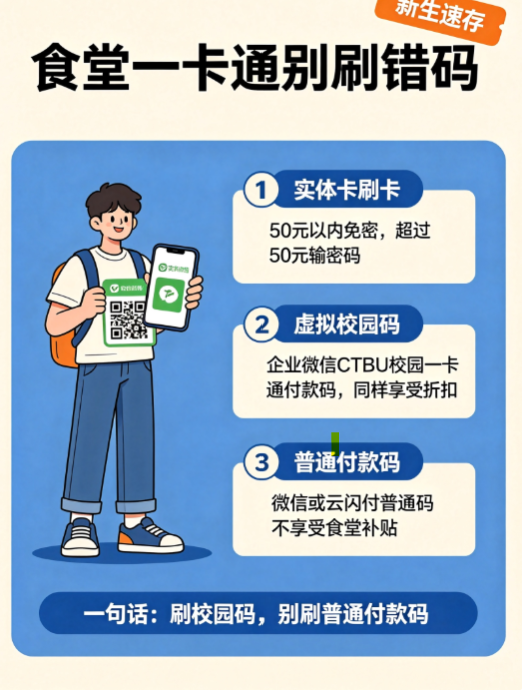

食堂付款大致分三种方式：实体卡贴卡、企业微信里的虚拟校园码、以及微信/云闪付的普通付款码。前两种都走同一个校园卡账户，余额和补贴完全一样；但普通付款码直接扣银行卡，补贴可就“刷没了”。

一、实体卡刷卡：要不要输密码？
用校园卡实体卡在食堂 POS 机上贴一下，系统会根据你当天的累计消费金额判断是否免密：
| 当天累计消费 | 是否需要密码 | 小提醒 |
|---|---|---|
| ≤ 50 元 | 直接刷，不用输 | 系统默认免密限额是 50 元 |
| ＞ 50 元 | 需要输入消费密码 | 超过限额后继续消费就要验证 |
初始消费密码
默认是 111111，拿到卡后建议尽快修改，万一丢卡也不容易被盗刷。如果觉得 50 元免密限额不合适，也可以去自助机上调整。
二、食堂补贴 / 学生折扣：刷校园码才有
很多同学习惯掏手机扫码，但食堂窗口前经常会摆两种码，稍不注意就刷错：
✅ 校园码（推荐）
打开 企业微信 → 工作台 → CTBU 校园一卡通，调出里面的“虚拟校园付款码”。它和实体卡是同一个账户，余额、食堂就餐补贴、学生折扣都同等生效。
❌ 普通付款码
微信、云闪付里的普通付款码走的是银行卡，不走校园卡账户，所以不享受食堂的学生补贴折扣。排队时别着急，认准校园码再扫。
三、企业微信绑银行卡 ≠ 直接扣饭钱
银行卡只用于充值
企业微信里绑定银行卡，作用是方便你随时给校园卡余额充值；真正吃饭时，还是要调出校园卡账户里的“校园码”来付款，这样补贴和折扣才会生效。
一句话总结：吃饭刷校园码，别刷微信/云闪付的普通付款码——校园卡账户里的余额和补贴才不“迷路”。
信息来源：学校企业微信工作台「CTBU 校园一卡通」及食堂窗口实际刷卡规则。26 级本科同学最终以学校官方实际安排为准。
信息来源：学校企业微信工作台「CTBU 校园一卡通」及食堂窗口实际刷卡规则。26 级本科同学最终以学校官方实际安排为准。